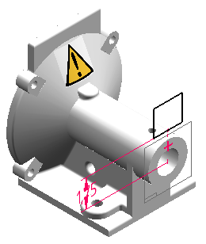
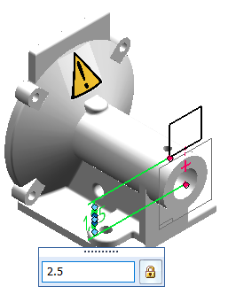
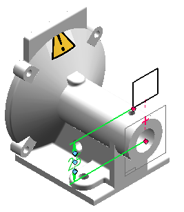
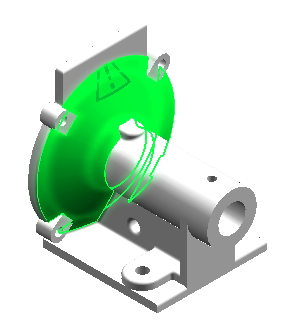
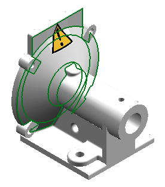
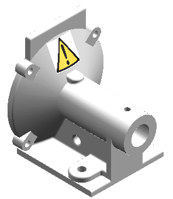

Edit the location of a decal
-
In PathFinder, right-click the decal entry, and then click Edit Definition.

-
Click the dimension and type in a new value.

-
Press Tab to enter the new value.
Notice that the new position projects the image above the face, and the image is trimmed by the edge of the face.

-
On the Decal command bar, click the Face Step button
.

-
Click an additional face on which to project the image.
-
Click Accept
 .
.The complete image crosses multiple faces.

-
Click Finish.

How do I
Apply a decal to a modelLook up more details
Decal commandDecal command bar (Planar projection)
Decal command bar (Label)
Decal Options dialog box